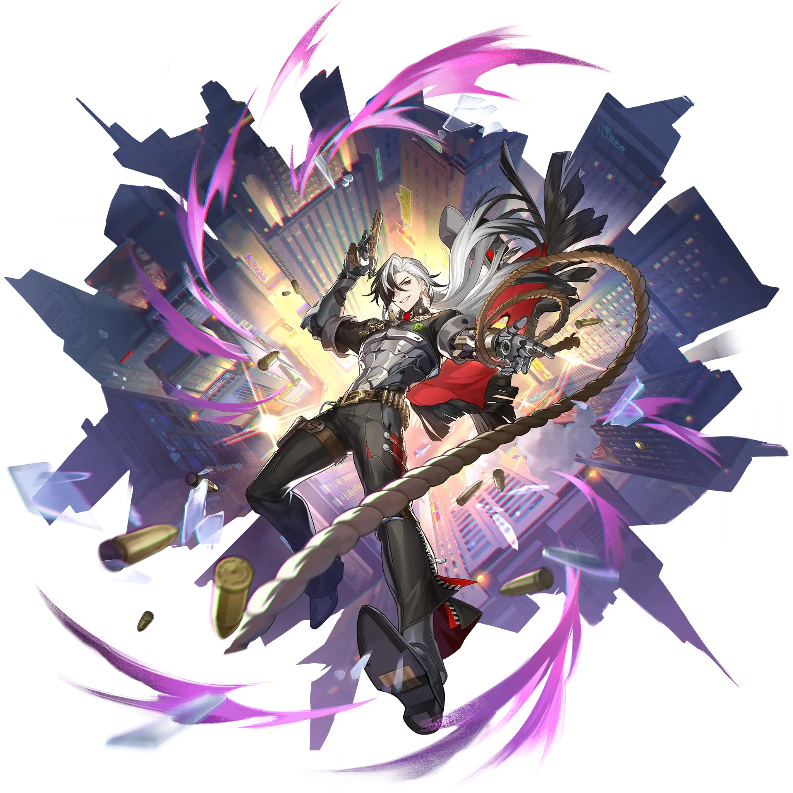

Boothill
Best Boothill build guide for Honkai Star Rail. See Boothill's best Relics, Light Cones, teams, Eidolons, Trace priority, and how to play Boothill.
🔍 Detail Skill
Semua skill aktif dan pasif beserta efeknya.
Deals Physical DMG equal to #1[i]% of Boothill's ATK to a single target enemy.
Deals Physical DMG equal to #1[i]% of Boothill's ATK to a single target enemy. The Enhanced Basic Attack cannot recover Skill Points and can only target the enemy that is in the Standoff.
Forces Boothill and a single target enemy into the Standoff state. Boothill's Basic ATK gets Enhanced, and he cannot use his Skill, lasting for #3[i] turn(s). This duration reduces by 1 at the start of Boothill's every turn. The enemy target in the Standoff becomes Taunted. When this enemy target/Boothill gets attacked by the other party in the Standoff, the DMG they receive increases by #1[i]%/#2
Each stack of Pocket Trickshot increases the Enhanced Basic Attack's Toughness Reduction by #4[i]%, stacking up to #5[i] time(s). If the target is Weakness Broken while the Enhanced Basic ATK is being used, based on the number of Pocket Trickshot stacks, deals Break DMG to this target equal to #1[i]%/#2[i]%/#3[i]% of Boothill's Physical Break DMG. The max Toughness taken into account for this DMG
After the Technique is used, when casting the Skill for the first time in the next battle, applies the same Physical Weakness to the target as the one induced by the Ultimate, lasting for #1[i] turn(s).
⚔ Light Cone Terbaik
Diurutkan dari yang paling kuat. Persentase menunjukkan performa relatif terhadap pilihan terbaik.
💎 Relic Set Terbaik
Set terbaik untuk karakter ini, diurutkan berdasarkan prioritas.
📊 Stat Utama
Stat yang dicari pada tiap slot.
👥 Tim yang Direkomendasikan
Karakter yang sering dipasangkan bersama Boothill.
 The Dahlia
The Dahlia
 Tingyun • Fugue
Tingyun • Fugue
 Sunday
Sunday
 Bronya
Bronya
 Ruan Mei
Ruan Mei
 Trailblazer • Harmony
Trailblazer • Harmony
🔗 Lanjutkan
Build ini dirangkum dari Prydwen Institute. Starwise tidak menghitung sendiri. Angka bisa berubah setelah patch atau karakter baru rilis.